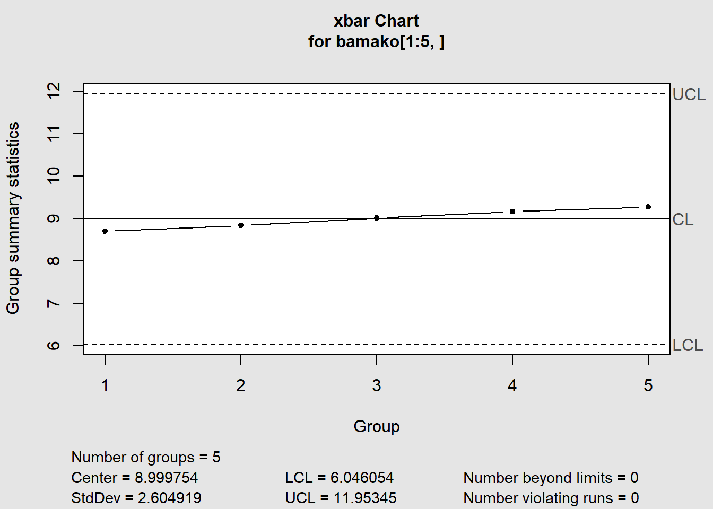

This journal provides practical examples on how to use Data Science tools and techniques in New Product Development and Manufacturing.
Abundant literature exists on both Data Science and on Product Development but in our view there are not enough transferable examples on how to benefit from recent R libraries in this area. Product Engineering and Manufacturing are very important activities in society because bringing innovative products to the market has an immense potential to improve the quality of life of everyone. Data Science brings new powerful approaches to the engineering and manufacturing of Consumer Goods and other Products helping minimizing their environmental impact and deliver optimal quality features at an affordable cost.
We aim at providing only directly applicable cases, similar to a cookbook approach. from a solid background in all related disciplines (e.g. design for six sigma, statistics and computer programming).
Theses case studies come from varied industries where repetitive manufacturing in massive quantities is involved, such as:
All the case studies are either fully anonymized or published the with the agreement of the originators for which the sources are clearly identified.
Bamako Lightening is a company that manufactures lamps. The weight of each lamp is critical to the quality of the product. The Production Operator monitors the production process using xbar and R-charts. Samples are taken of six lamps every hour and their means and ranges plotted on control charts.
We start by loading it in our R session:
bamako <- read_csv("data/Bamako.csv")The data in Figure 7.12 below represents samples taken over a period of 25 hours of production.
knitr::kable(head(bamako), caption = "Figure 7.12")| Hour | Sample1 | Sample2 | Sample3 | Sample4 | Sample5 | Sample6 |
|---|---|---|---|---|---|---|
| Hour1 | 9.9943 | 10.0196 | 9.9732 | 10.0088 | 9.9685 | 9.9544 |
| Hour2 | 9.9721 | 9.9643 | 9.9426 | 9.9712 | 10.0259 | 10.0177 |
| Hour3 | 9.9788 | 10.0213 | 9.9407 | 10.0696 | 10.0161 | 10.0709 |
| Hour4 | 10.0658 | 10.0800 | 9.9514 | 9.9958 | 10.0338 | 10.0422 |
| Hour5 | 10.0136 | 9.9791 | 9.9449 | 9.9403 | 10.0124 | 10.0221 |
| Hour6 | 10.0295 | 10.0057 | 9.9715 | 10.0388 | 10.0019 | 9.9616 |
To plot the control chart we can use the qcc package.
library(qcc)## Package 'qcc' version 2.7## Type 'citation("qcc")' for citing this R package in publications.Before entering regular production it is recommended to run a “calibration run”. The calibration run is used to calculate the control limits.
qcc(bamako[1:5,], type = "xbar")
## List of 11
## $ call : language qcc(data = bamako[1:5, ], type = "xbar")
## $ type : chr "xbar"
## $ data.name : chr "bamako[1:5, ]"
## $ data : num [1:5, 1:7] 1 2 3 4 5 ...
## ..- attr(*, "dimnames")=List of 2
## $ statistics: Named num [1:5] 8.7 8.84 9.01 9.17 9.27
## ..- attr(*, "names")= chr [1:5] "1" "2" "3" "4" ...
## $ sizes : int [1:5] 7 7 7 7 7
## $ center : num 9
## $ std.dev : num 2.6
## $ nsigmas : num 3
## $ limits : num [1, 1:2] 6.05 11.95
## ..- attr(*, "dimnames")=List of 2
## $ violations:List of 2
## - attr(*, "class")= chr "qcc"Afterwards, the production samples can be assessed against those limits and the control chart rules can be verified. In this example the shewhart rules are used.
In the graphic below the control limits are calculated according to the selected duration of the calibration run. The runs breaking the shewhart rules are re-evaluated when control limits change.
Adapted from (Bass 2007)
Bass, Issa. 2007. Six Sigma Statistics with Excel and Minitab. 1st ed. McGraw-Hill.